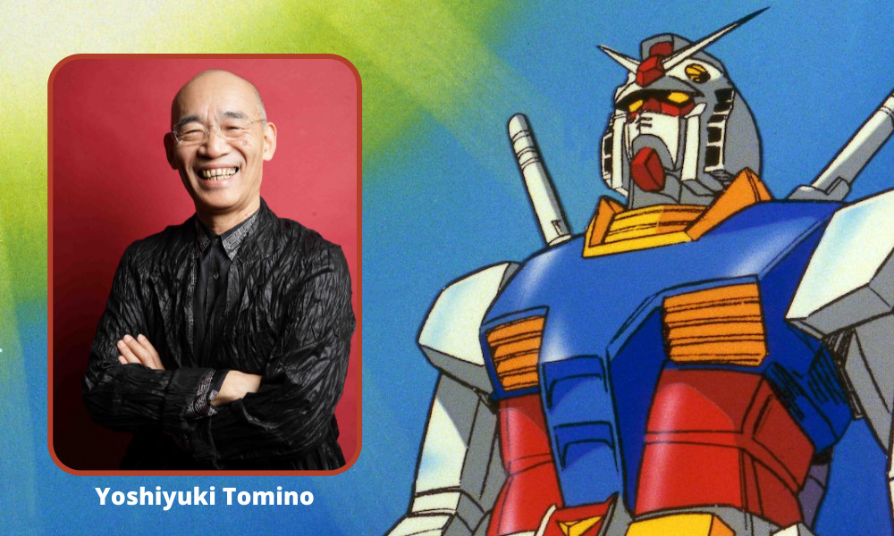
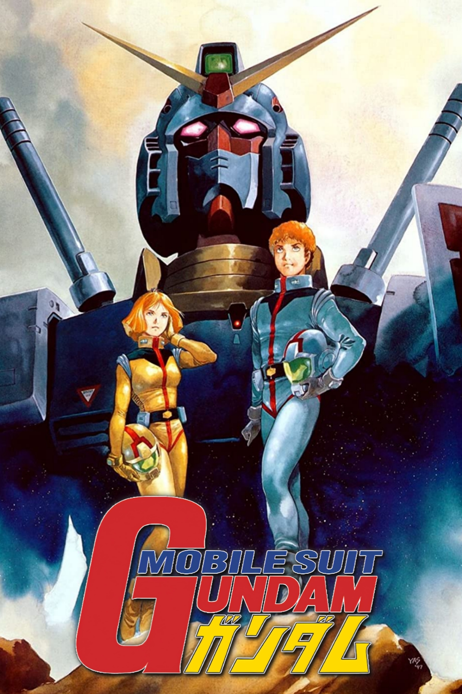

Gundam (ガンダム), o Serie Gundam (ガンダムシリーズ) es una franquicia japonesa de ciencia ficción creada por Yoshiyuki Tomino en los estudios Sunrise.
La serie se centra en conflictos bélicos entre diferentes grupos humanos, dichos conflictos se llevan acabo luchando con armaduras llamadas Mobile Suits; estos son robots controlados remota o directamente por los humanos. En las series, el Mobile Suits usado por el protagonista es el que recibe el nombre de Gundam.
La primera serie fue estrenada el 7 de abril de 1979, y fue llamada Mobile Suits Gundam. Esta revoluciono el genero Mecha en Japon, esto ya que mostraba un conflicto bélico humano haciendo usos de robots de guerra.

"Mobile Suit Gundam: The Witch from Mercury" es la ultima serie publicada de esta
franquicia. Esta es la primera producción principal de esta serie en los ultimos 7 años,
los generos tratados en esta obra son principalmente Mecha y Yuri, ademas, es la primera historias
que presenta un personaje principal femenino.
La popularidads del anime ha generado millones en ingresos, lo cual ha generado que se publiquen gran cantidad de OVAs, películas, manga, series de televisión, novelas, videojuegos, modelos a escala, música, juguetes, ropa, comida, etc.
El argumento usado en su primera aparición, se ha replicado en diferentes secuelas, precuelas, historias
paralelas, entre otras cosas.
Tal es la popularidad de la franquicia que se ha convertido en uno de los
mayores iconos culturales de Japon.
Para el 2008, esta franquicia ya había llegado a costar 50 mil millones de Yen, y cuenta con el 90% del mercado de maquetas.